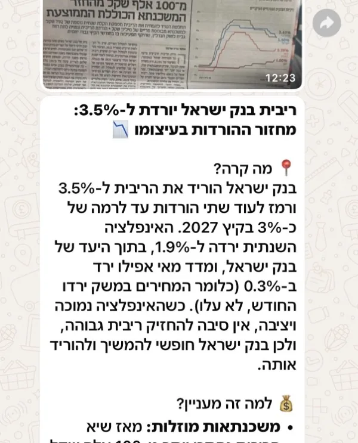
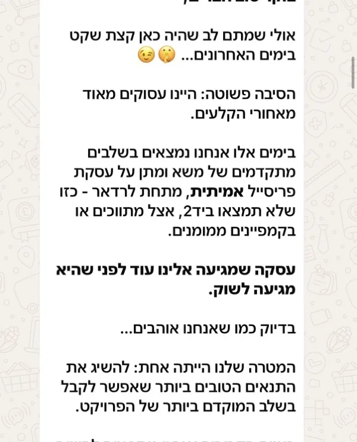
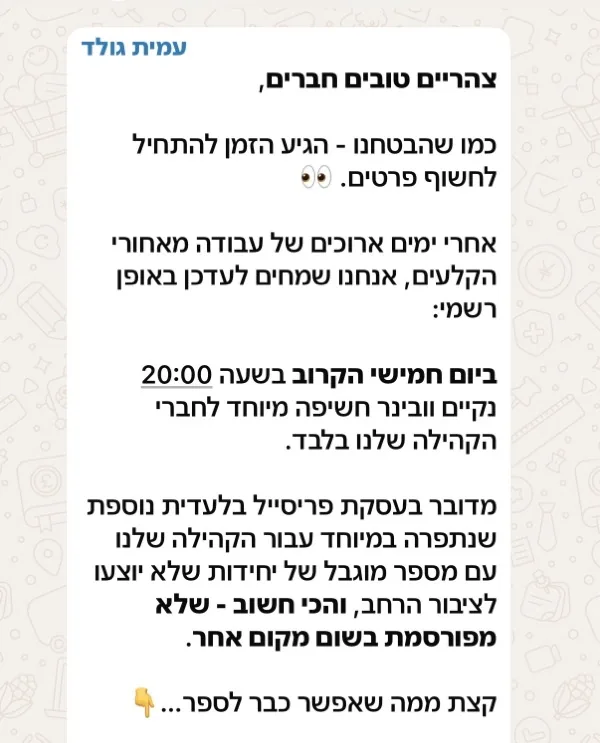
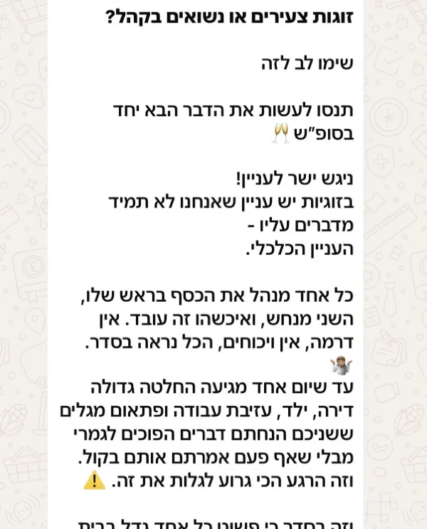
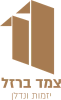

✓
נשאר עוד צעד אחרון
לחץ כאן להצטרפות ותקבל גישה לכל תוכן הקהילה
הצטרפות לקהילהאם הכפתור לא נפתח, ודאו שוואטסאפ מותקן במכשיר.
ככה זה נראה בפנים





לחץ כאן להצטרפות ותקבל גישה לכל תוכן הקהילה
הצטרפות לקהילהאם הכפתור לא נפתח, ודאו שוואטסאפ מותקן במכשיר.



